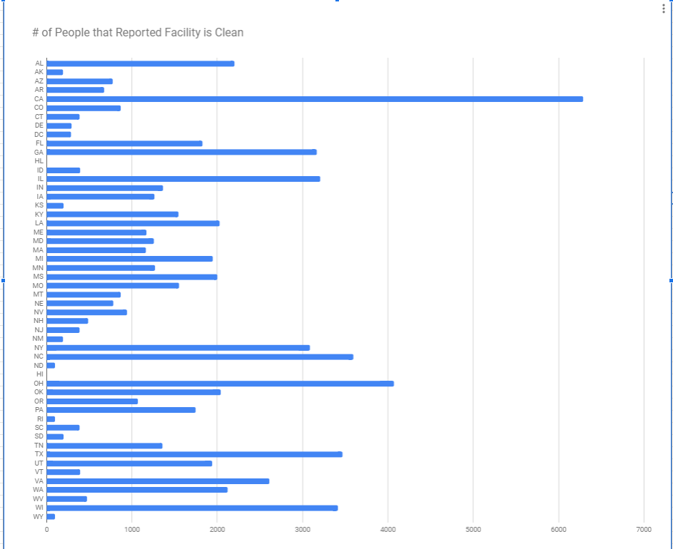
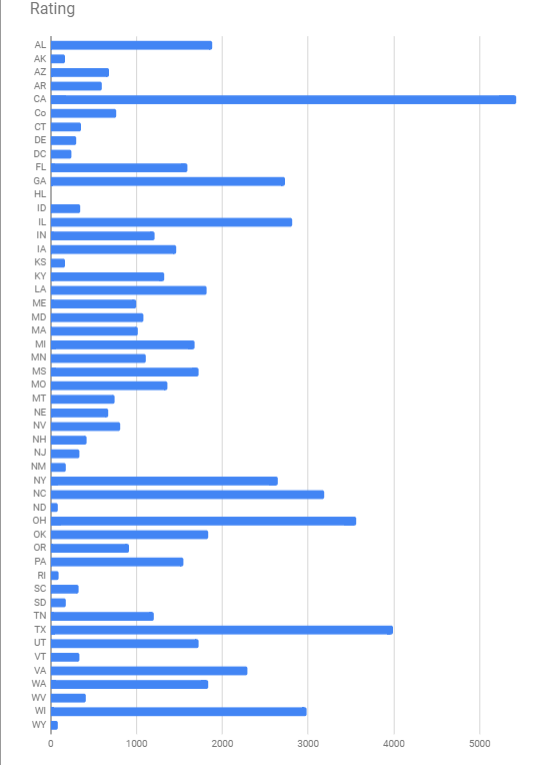
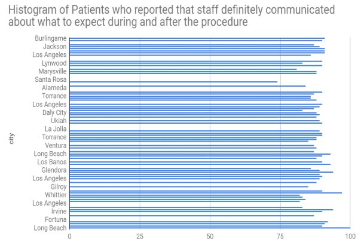

1)Which data set did you select and why did you choose it? Summarize the data included, being specific about the types of data (text, sounds, transactions, etc.) included. Make sure you list the title and the website where you found the data.
I select Outpatient and Ambulatory Surgery Consumer Assessment of Healthcare Providers and Systems Survey. The data includes the results of a survey that patients took in numerous hospitals about the care and service they received from the staff. Questions regarding staffs’ communication skills, cleanliness, and etc. were asked.
2)List your 3-5 hypotheses and the data visualizations that you created for each. (Include the visualizations as images on your portfolio or provide a link)
1)If the hospital is in a larger state, then the hospital will be cleaner.

2)If more people say the hospital is clean,then the hospital rating should be higher.

3)If the city is the largest in the state, then the facility would hire more professional and experienced staff.

3)Explain how collaborating with a partner helped you gain new insight or knowledge about the data.
Collaborating with a partner helped you gain new insight or knowledge about the data by partner may know something you don't know about the data,and you can organize the data with your partner.
4)Identify at least one security and/or privacy concern that is associated with the data in the data set you chose.
The data privacy concern is that it tell you about number of people like or dislike their state hospital.